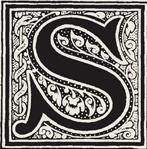
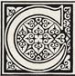
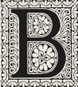

SCAPE from AZKABAN!
irius Black, possibly the most infamous prisoner ever to be held in Azkaban fortress, is still eluding capture, the Ministry of Magic confirmed today. "We are doing all we can to recapture Black," said the Minister of Magic, Cornelius Fudge, this morning, "and we beg the magical community to remain calm."

Despite generally being considered inescapable, Azkaban prison has seen at least six occasions in which prisoners have escaped. One of these mass-breakouts was done so with the help of Dementors. However, only one person has ever escaped without any outside help, although it is possible that Rodolphus Lestrange also escaped unaided. From when Azkaban was first used, by the insistence of Minister for Magic Damocles Rowle, as a wizarding prison, no breakouts have occurred for nearly 300 years due to the Dementors depriving their prisoners of their magical capabilities and sanity.
acpture him live or dead. Say the Fudge that has been criticised by some members of the International Confederation of Wizards for informing the Muggle Prime Minister of the crisis. "Well, really, I had to, don't you know," said an irritable Fudge. "Black is mad. He's a danger to anyone who crosses him, magic or Muggle. Cornelius Fudge gave him in late July 1993, recognising him as his traitorous former friend Peter Pettigrew. By 31 July, Black took advantage of his extreme weight loss to slip through his cell door in his Animagus dog form (which was unregistered, thus the Ministry did not take preparations against) while the Dementors were bringing in his food and swam across the North Sea to find Pettigrew. Black was able to maintain his sanity due to his knowledge of his innocence, a non-happy thought that the Dementors could not take. It was only this that allowed him to maintain his powers to transform, and what made the escape possible.
lack's true identity will not be reavealed to anyone by the Prime Minister, the own assurance. And let's face it — who'd believe him if he did?". While Muggles have been told that Black is carrying a gun (a kind of metal wand that Muggles use to kill each other), the magical community lives in fear of a massacre like that of twelve years ago, when Black murdered thirteen people with a single curse. This escape was the only known unaided escape, and officially the first one in Azkaban history. Black was facing the Dementor's Kiss as punishment should he ever be recaptured, though he ultimately eluded the Ministry. So if you are reading this article, be awared that Black is a murder and he can kill you, your parents and you children. Call the Magic Minister at the first signal.